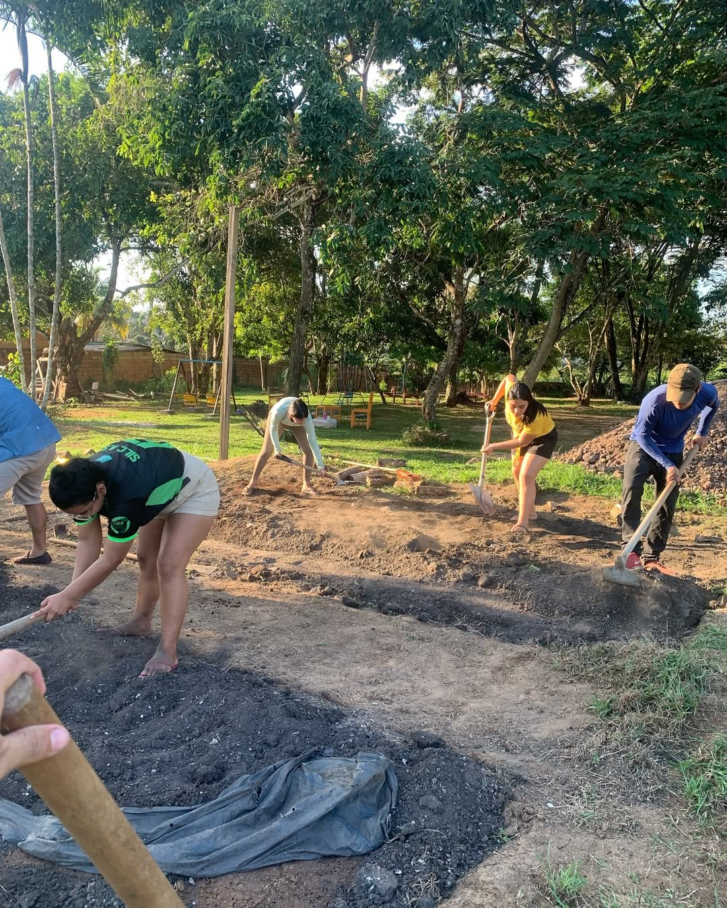
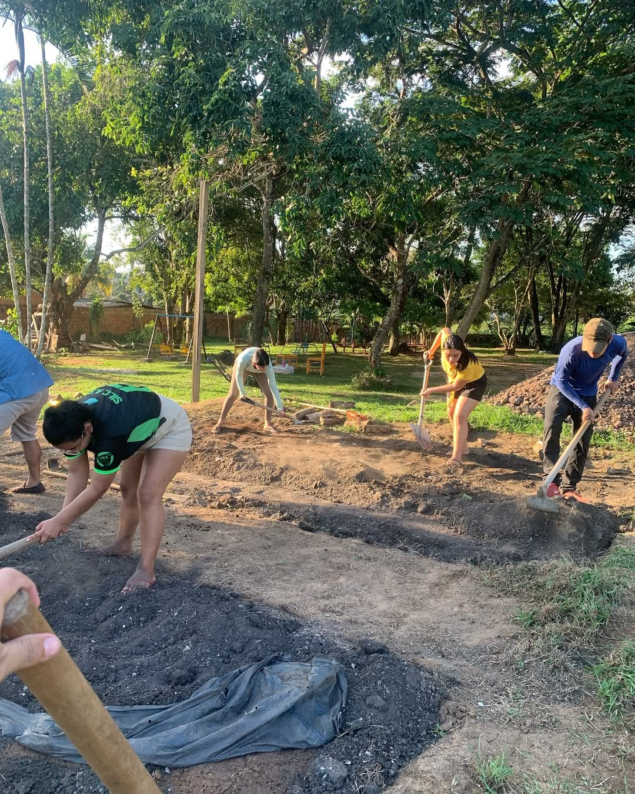
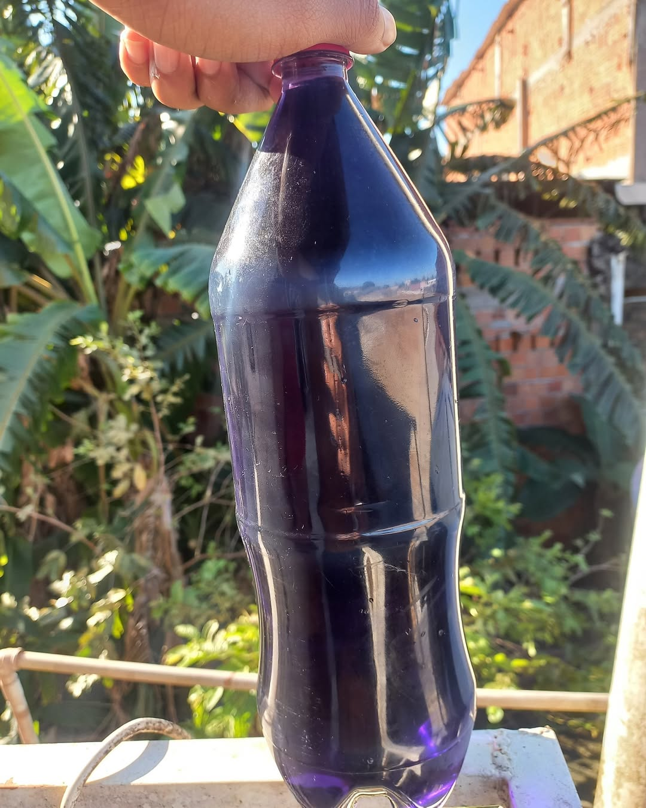
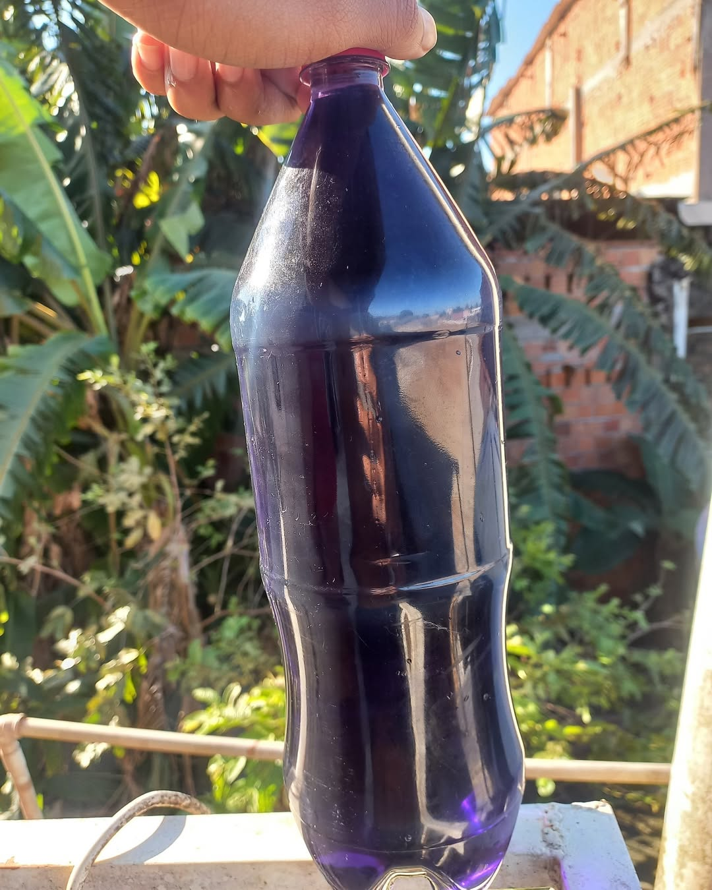

ECOCOMUNIDADE
Promovendo a sustentabilidade e a preservação ambiental em comunidades urbanas e rurais
Sobre o Projeto
O ECOCOMUNIDADE é um projeto do LDS que visa promover a sustentabilidade e a preservação ambiental em comunidades urbanas e rurais, através de ações educativas, práticas sustentáveis e engajamento comunitário.
Objetivos
- Promover a educação ambiental nas comunidades
- Implementar práticas sustentáveis no dia a dia
- Engajar a comunidade em ações de preservação
- Desenvolver consciência ecológica entre os jovens
- Criar hortas comunitárias autossustentáveis
Atividades
Impacto Social e Ambiental
O projeto ECOCOMUNIDADE já impactou positivamente a vida de mais de 100 famílias em Itacoatiara. Com nossas ações de educação ambiental e implementação de hortas comunitárias, conseguimos:
Impactadas
Comunitárias
Realizadas

Notícias do Projeto
Acompanhe as últimas atualizações e atividades do projeto ECOCOMUNIDADE

 1" class="active">
 2">
1" class="active">
 2">
 3">
3">
 4">

4">



Plantar e reciclar: uma combinação perfeita!
an class="news-category">Sustentabilidade Reutilizando garrafas PET, unimos coleta seletiva, compostagem, horticultura e reutilização de resíduos em nossos canteiros.
Reutilizando garrafas PET, nosso projeto une coleta seletiva, compostagem, horticultura e reutilizaçãoPrimeira Colheita do Projeto
ton>ss="filter-btn" data-filter="plantio">Plantios Celebramos a primeira colheita de hortaliças do nosso projeto de horta comunitária, demonstrando como a agricultura urbana pode transformar espaços ociosos em fontes de alimento saudável.


 tária,
tária,
 ntes de alimento saudável.
ntes de alimento saudável.


Terceiro Replantio Realizado
eplantio --> Terceiro replantio realizado pelo grupo da eco comunidade juntamente com os bolsistas da comunidade Chico Xavier.
ss="position-relative news-image-carousel">

 lass="partner-logo">
lass="partner-logo">
 n>
n>
Estudantes do Curso de Engenharia Florestal
ass="position-relative news-video"> Estudantes do Curso de Engenharia Florestal, coordenados pelo Prof. Me. Daniel Campos, estão realizando diversos projetos na Biblioteca Comunitária Maria Dolores, localizada no Município de Itacoatiara-AM.479&title=0&byline=0&portrait=0&background=0"
allow="autoplay; fullscreen; picture-in-picture; clipboard-write; encrypted-media" Parceiros:O curso de horticultura promoveu uma prática de semeadura, incentivando a sustentabilidade e sciente entre os participantes da comunidade.
Prática de Semeadura
O curso de horticultura promoveu uma prática de semeadura, incentivando a sustentabilidade e o cultivo consciente. de Engenharia Florestal -->